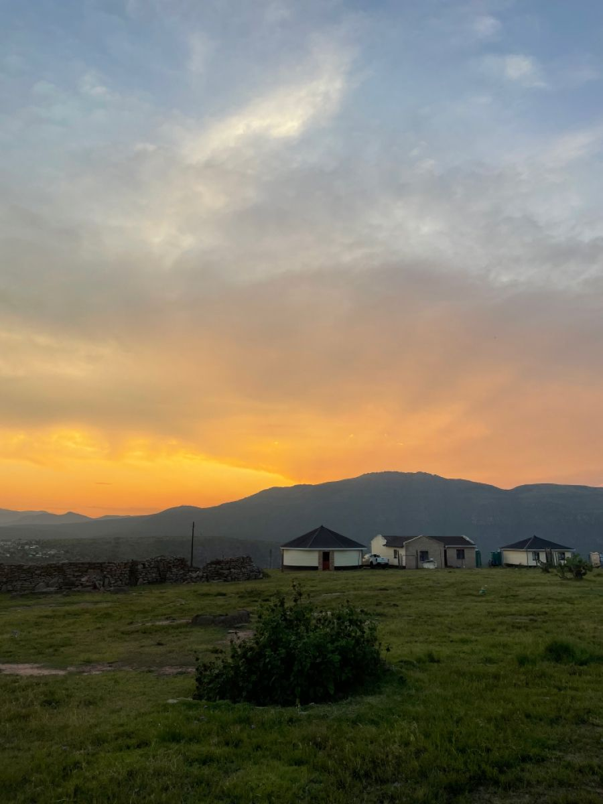
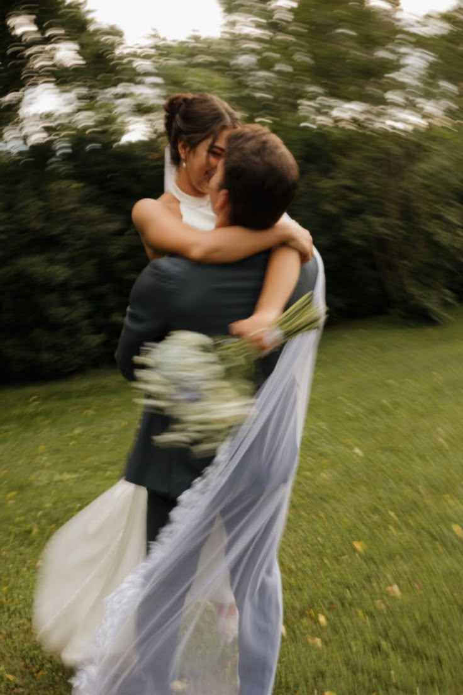
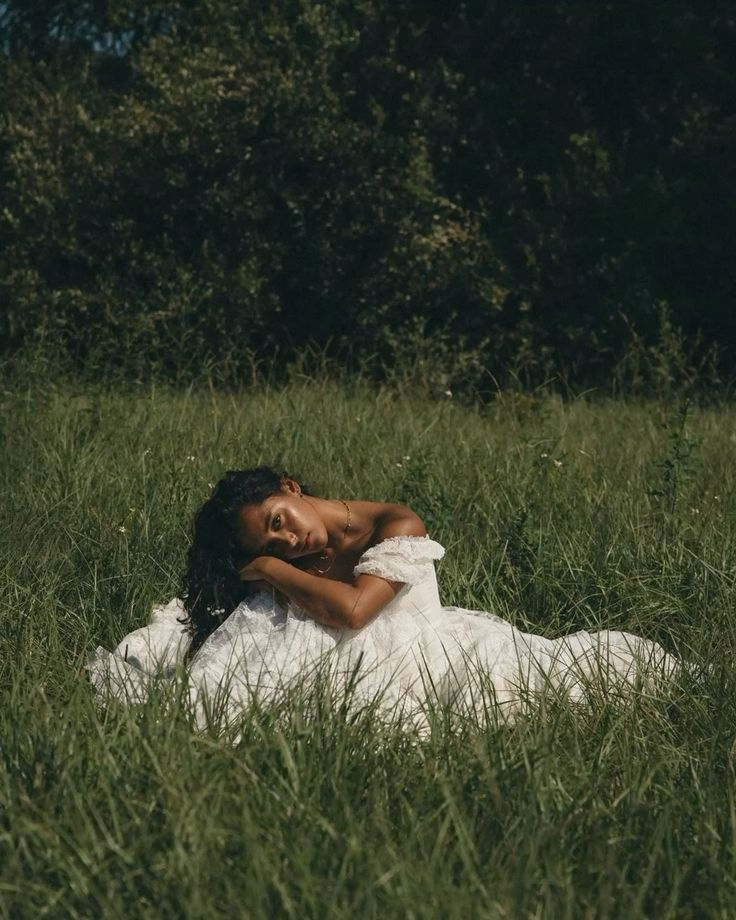

01
Portraits
Personal stories told through natural and intimate portraits.
A selection of portrait, nature, candid and editorial photography captured with a focus on natural light, emotion and honest moments.
Personal stories told through natural and intimate portraits.

Still landscapes and details inspired by the world around us.

Unposed moments that capture genuine emotion and connection.

Thoughtful compositions combining people, style and visual storytelling.